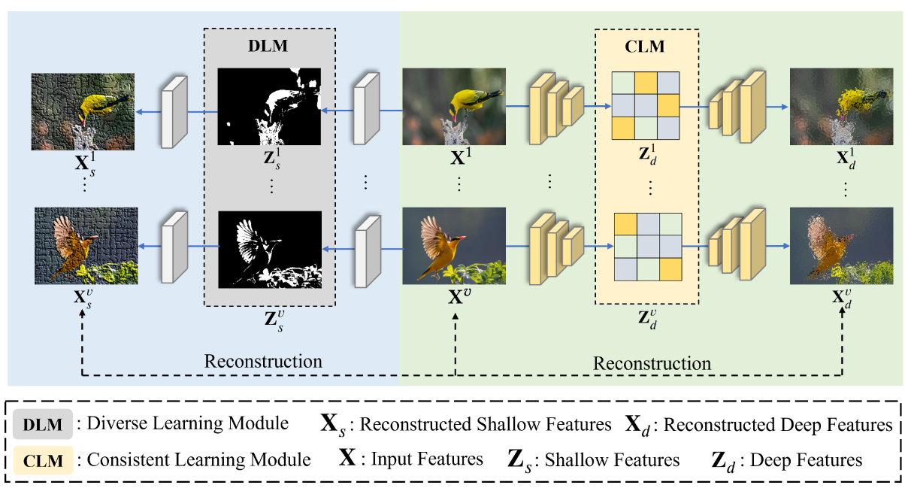
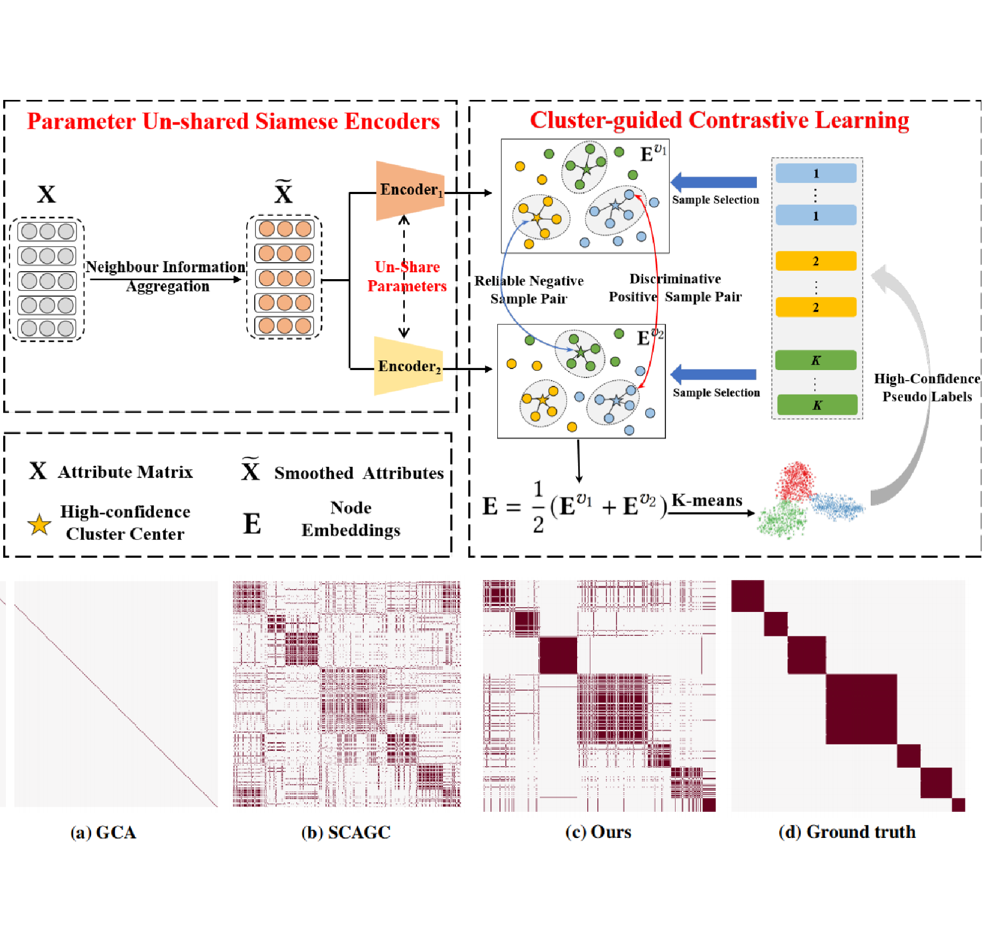
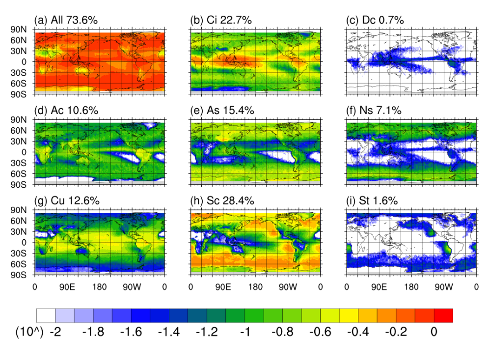

News
- [2023.08] One papers have been accepted by Remote Sensing 2023.
- [2022.11] One papers have been accepted by AAAI 2023.
|
|
Research
My research interests include Severe Precipitation Estimation, Precipitation Nowcasting, Atmospheric Remote Sensing. The representative papers are highlighted.
|
|

|
Asymmetric double-winged multi-view clustering network for exploring Diverse and Consistent Information
Qun Zheng,
Xihong Yang,
Siwei Wang,
Xinru An,
Qi Liu
Preprint on ArXiv , 2023
Paper
/
Code
We propose a novel multi-view clustering network termed CodingNet to explore the diverse and consistent information simultaneously in this paper.
|
|

|
Cluster-guided Contrastive Graph Clustering Network
X. Yang,
Y. Liu,
S. Zhou,
J. Duan,
W. Tu,
Qun. Zheng,
X. Liu,
L. Fang,
E. Zhu
AAAI (Oral presentation), 2023
Paper
/
Code
Contrastive deep Graph Clustering network (CCGC) is proposed by mining the intrinsic supervision information in the high-confidence clustering results.
|
|

|
Spatial Distributions of Cloud Occurrences in Terms of Volume Fraction as Inferred from CloudSat and CALIPSO
Y. Ding,
Q. Liu,
P. Lao,
M. Li,
Y. Li,
Qun Zheng,
Y. Peng
Remote Sensing, 2023
Paper
/
Code
In this study, by using spaceborne radar measurements, the spatial distribution of cloud volume fraction throughout the troposphere was investigated, and the contributions of various cloud types at each location were clarified.
|
Design and source code from Jon Barron's website
|
{kind=link}